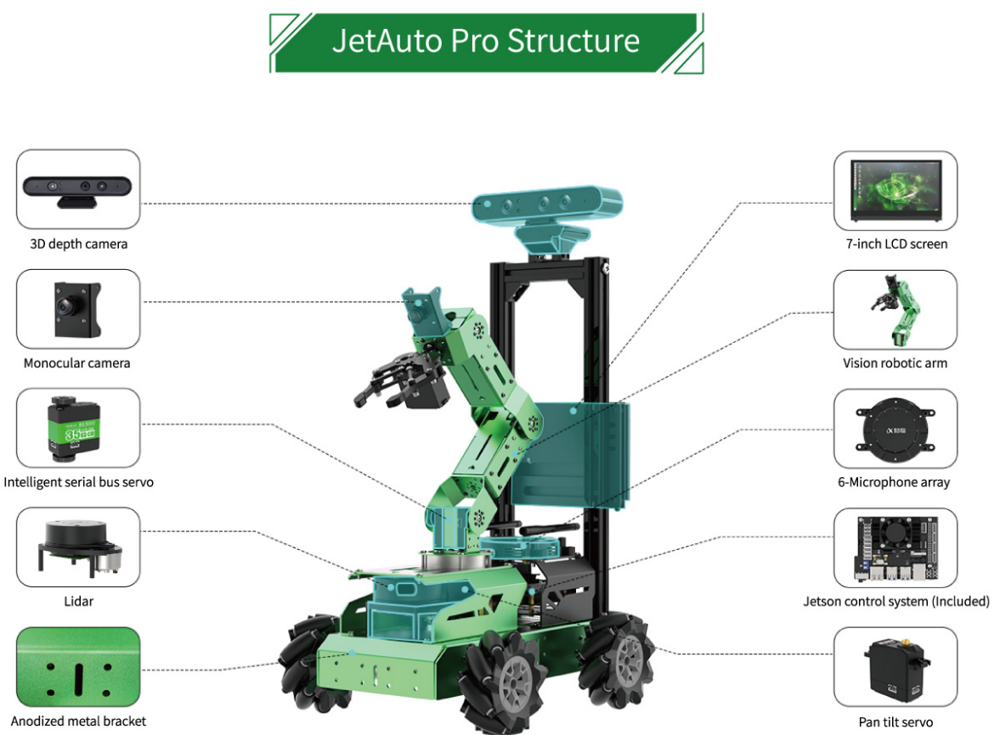

Lab 4 : Robot Model, Gazebo and JetAuto
Seneca Polytechnic SEA700 Robotics for Software Engineers
Introduction
URDF
URDF (Unified Robot Description Format) is an XML format for representing a robot model. URDF is commonly used in Robot Operating System (ROS) tools such as rviz (Ros Visualization tool) and Gazebo simulator. It is essentially a 3-D model with information around joints, motors, mass, etc. The files are then run through the Robot Operating System (ROS). The data from the file informs the human operator what the robot looks like and is capable of before they begin operating the robot.
More details on the URDF specification can be found here.
Many robotic manufacturers have URDF models of their devices available for download. These include the Segway RMP, Turtlebot, and AR10.
More Models:
- Agility Robotics Digit
- ANYbotics Anymal
- Boston Dynamics Spot (via Clearpath ROS Driver)
- Clearpath Jackal
- Clearpath Dingo
- Clearpath Husky
- Clearpath Turtlebot
- Unitree Go1
- Universal Robotics
URDF vs XACRO
URDF (Unified Robot Description Format) and XACRO (XML Macros) are both used in ROS (Robot Operating System) for robot modeling, but they have distinct roles. URDF is a straightforward XML format that describes the physical structure of a robot, detailing its links and joints, as well as their properties like geometry and dynamics. It's ideal for simpler robot designs where the model's complexity is limited. In contrast, XACRO is an extension of URDF that incorporates macros, allowing for parameterization and reducing redundancy in model descriptions. This makes XACRO particularly useful for complex robots or those with interchangeable components, as it facilitates easier maintenance and enhances readability. Typically, XACRO files are processed into URDF files before they are utilized in simulations or applications, combining the flexibility of XACRO with the straightforwardness of URDF.
RViz
RViz, or Robot Visualization, is a powerful 3D visualization tool used primarily in robotics and the Robot Operating System (ROS). It enables developers to visualize and interpret a wide array of sensor data, such as point clouds, maps, and robot models, in real-time. With its interactive features, users can manipulate objects and adjust visual settings to enhance understanding of robot behavior and performance. RViz's plugin architecture allows for extensibility, accommodating various data types and visualization needs. This makes it an invaluable resource for debugging algorithms, simulating scenarios, and gaining insights into robotic systems, ultimately aiding in the development and refinement of robotics applications.
Gazebo
Gazebo is an open-source robotics simulation tool that provides a highly realistic environment for testing and developing robotic systems. It allows users to simulate robots in complex 3D environments, complete with detailed physics interactions, which include gravity, collisions, and friction. Gazebo supports a variety of sensors, such as cameras and LIDAR, enabling the generation of realistic sensor data for developing perception algorithms. Its seamless integration with the Robot Operating System (ROS) enhances its functionality, allowing developers to leverage ROS tools and libraries for robot control and communication. With a flexible plugin architecture, Gazebo can be customized to meet specific simulation needs, making it an essential platform for researchers and engineers in the field of robotics.
Preparation
JetAuto Robot
In preperation of using the JetAuto robot, please be familiar with the user manual and the basic lesson provided by the manufacturer found here:
Install Gazebo
After being familiar with ROS, we'll now install the Gazebo simulation environment.
-
Following the instruction here to install Gazebo version 9.X to be used with ROS Melodic. Each Gazebo version works with a specific version of ROS.
sudo apt install gazebo9 sudo apt install libgazebo9-dev -
Once installed, start Gazebo with the following command to ensure it's functional:
gazebo
Figure 3.1 Gazebo Running
-
Lastly, ensure the following ros gazebo packages are installed:
sudo apt install ros-melodic-gazebo-dev ros-melodic-gazebo-msgs ros-melodic-gazebo-plugins ros-melodic-gazebo-ros ros-melodic-gazebo-ros-control ros-melodic-gazebo-ros-pkgs
Procedures
JetAuto Robot Inspection
The robot we have for this course is the JetAuto Pro assembled in the configuration:

Figure 3.2 JetAuto Pro
-
Before using the JetAuto robot, read the following:
- JetAuto User Manual
- Page 01: Guide to Battery Safety
- Page 03: JetAuto Pro Standard Kit Packing List
- Page 04-09: Installation Instruction (except for 1.4 LCD)
- Check all nuts and bolts to ensure confirm installation and security
- Page 10-11: Charging and Starting the Robot
We will NOT be using the smartphone app for controlling the robot.
- JetAuto User Manual
SSH Into the JetAuto Robot
Copy this lab instruction somewhere on your computer as you'll lose connection to the internet!
-
By default, the JetAuto is configured to be in Wifi AP mode. Power on the robot and connect to the robot's WiFi starting in "HW-". If you are unsure of which Wifi SSID is your robot broadcasting, open the "Tool" application on the robot and look for the AP name in the setting. Do NOT change any of the default settings.
The password for the WiFi connection is: hiwonder.
-
Once connected, use terminal (or PuTTY) to SSH into the robot at "192.168.149.1".
ssh jetauto@192.168.149.1The user is: jetauto, and the password is: hiwonder.
USB connection with the robot
-
It is also possible to connect with the robot via USB using the Jetson Nano's micro-B USB port.
-
Use
screenterminal application to connection with the robot.sudo apt-get install -y screen sudo screen /dev/ttyACM0 115200
NoMachine (Use with caution)
Only recommended to be used on within a virtual machine. For security, stop the NoMachine server after you installation.
- NoMachine is another application that can be used to for remote connection with the JetNano board. Once you are connected with the robot, the credential is the same as above.
-
JetAuto Workspace
-
After connecting with the JetAuto robot, let's copy the JetAuto workspace
jetauto_wsover to our local virtual machine so we can inspect and use it locally. Run the following command to use rsync to copy the directory over:rsync -av jetauto@192.168.149.1:~/jetauto_ws/ ~/jetauto_ws -
Once
jetauto_wsis on your virtual machine's home directory, let's add it as a source in~/.bashrc.echo "source /home/jetauto/jetauto_ws/devel/setup.bash" >> ~/.bashrc
JetAuto Robot Movement
- Ensure the battery charging cable is UNPLUGGED and all cables on the robot are secure.
- Ensure all structures, nuts and bolts on the robot are tightly fastened.
- Ensure the robot is on the ground and awy from any obstacles.
-
In a terminal that's connected to the JetAuto robot using SSH or in JetAuto's terminal using remote desktop, stop the app service then start the
jetauto_controllerservice:sudo systemctl stop start_app_node.service roslaunch jetauto_controller jetauto_controller.launch -
Now that the controller service has started, we can publish move command as Twist message to the motion controller. Before publish a command to the robot, remember you must issue a stop command for the robot to stop. Let's issue that first so you can recall it faster.
rostopic pub -1 /jetauto_controller/cmd_vel geometry_msgs/Twist '{linear: {x: 0.0, y: 0.0, z: 0.0}, angular: {x: 0.0, y: 0.0. z: 0.0}}'Your robot should not do anything.
-
Issue a move in the x-direction (forward) at 0.3 m/s,
x: 0.3:rostopic pub -1 /jetauto_controller/cmd_vel geometry_msgs/Twist '{linear: {x: 0.3, y: 0.0, z: 0.0}, angular: {x: 0.0, y: 0.0. z: 0.0}}'Your robot should now start moving. Be ready to stop the robot by issuing (or up arrow twice):
rostopic pub -1 /jetauto_controller/cmd_vel geometry_msgs/Twist '{linear: {x: 0.0, y: 0.0, z: 0.0}, angular: {x: 0.0, y: 0.0. z: 0.0}}'- DO NOT set the movement value above 0.7 m/s to keep the robot within it control limit.
The linear values refer to the translation of the robot. Positive X is forward and positive Y is left. There is no Z-direction for this robot. Do not exceed 0.7 m/s.
The angular values refer to the rotation of the robot. Only Z-rotation is considered with positive value as counter-clockwise. Do not exceed 3.5 rad/s.
-
Let's inspect the source code of the motion controller. Open the file at the following path:
~/jetauto_ws/src/jetauto_driver/jetauto_controller/scripts/jetauto_controller_main.py
As we can see in the controller code:
linear_x = self.go_factor*msg.linear.x linear_y = self.go_factor*msg.linear.y angular_z = self.turn_factor*msg.angular.z speed_up = False if abs(self.last_linear_x - linear_x) > 0.2 or abs(self.last_linear_y - linear_y) > 0.2 or abs(self.last_angular_z - angular_z) > 1: speed_up = True self.last_linear_x = linear_x self.last_linear_y = linear_y self.last_angular_z = angular_z linear_x_, linear_y_ = linear_x * 1000.0, linear_y * 1000.0#mm to m speed = math.sqrt(linear_x_ ** 2 + linear_y_ ** 2) direction = math.atan2(linear_y_, linear_x_) direction = math.pi * 2 + direction if direction < 0 else direction self.mecanum.set_velocity(speed, direction, angular_z, speed_up=speed_up)The
Twistmessage fromcmd_velprovides the necessary information to calculatespeed,direction, andangular_zfor controlling the mecanum wheel using theMecanumChassisobject.Refer to JetAuto & JetAuto Pro Resources chapter 7.3 for the working principle of the mecanum wheel.
-
Try other various combination of motion command to gain a better understanding of the robot's movement.
-
Next, we'll try controlling the JetAuto robot using keyboard input. Keep the
jetauto_controllerterminal open. In a new/other terminal, run:roslaunch jetauto_peripherals teleop_key_control.launch robot_name:="/"Use w, a, s, d to control the robot.
-
Inspect the source code of the teleop controller to understand it's operation by opening the file at:
~/jetauto_ws/src/jetauto_peripherals/scripts/teleop_key_control.py
JetAuto Robot Model
Now that we can control the basic movement of the JetAuto robot, let's try to simulate it in Gazebo. Robot model in URDF consist of links that are joined together to form a robot assembly. Each link have its given geometry, mass, and collision parameter. The geometry can be provide as simple shape or complex shape using solid model.
-
Before we start, let's ensure we have the required package installed to view and test our robot model:
sudo apt install ros-melodic-joint-state-publisher ros-melodic-joint-state-publisher-gui ros-melodic-joint-trajectory-controller -
To have a quick view at the URDF model, we can us RViz:
roslaunch jetauto_description display.launch model:=urdf/jetauto.urdfYou can use the
joint_state_publisher_guito adjust the arm angle.Figure 3.3 JetAuto in Gazebo
-
Let's open up the JetAuto URDF model file to take a look at it more closely.
~/jetauto_ws/src/jetauto_simulations/jetauto_description/urdf/jetauto_car.urdf.xacro
Here, we see a file in XML format:
<robot name="jetauto" xmlns:xacro="http://ros.org/wiki/xacro" > <xacro:property name="M_PI" value="3.1415926535897931"/> <xacro:property name="base_link_mass" value="1.6" /> <xacro:property name="base_link_w" value="0.297"/> <xacro:property name="base_link_h" value="0.145"/> <xacro:property name="base_link_d" value="0.11255"/> <xacro:property name="wheel_link_mass" value="0.1" /> <xacro:property name="wheel_link_radius" value="0.049"/> <xacro:property name="wheel_link_length" value="0.04167"/>The first few lines define the robot's name and the basic parameters of the JetAuto's body.
M_PIdefines the value of π.base_link_massdefines the mass of the JetAuto’s body model.base_link_wdefines the width of the JetAuto’s body model.base_link_hdefines the height of of the JetAuto’s body model.base_link_ddefines the length of of the JetAuto’s body model.wheel_link_massdefines the mass of each mecanum wheel.wheel_link_radiusdefines the radius of each mecanum wheel.
The name of the robot is also defined as
jetauto.<link name="base_footprint"/> <joint name="base_joint" type="fixed"> <parent link="base_footprint"/> <child link="base_link"/> <origin xyz="0.0 0.0 0.0" rpy="0 0 0"/> </joint>base_footprintis defined as the top parent link (part) of the JetAuto model to create a overall envolope that sits as the origin.base_linkis the base part of the robot that house the battery and motor. In the URDF mode, it is connected tobase_footprintas a child linke. This envolope configuration ensure the wheel of the robot will always above the origin (ground).<link name="base_link"> <xacro:box_inertial m="${base_link_mass}" w="${base_link_w}" h="${base_link_h}" d="${base_link_d}"/> <visual> <origin xyz="0 0 0" rpy="0 0 0" /> <geometry> <mesh filename="package://jetauto_description/meshes/base_link.stl" /> </geometry> <material name="green"/> </visual> <collision> <origin xyz="${base_link_w/2.0 - 0.14810} 0 ${0.126437/2 + 0.02362364}" rpy="0 0 0" /> <geometry> <box size="${base_link_w} ${base_link_h} ${base_link_d}" /> </geometry> </collision> </link>Next is the link/part
base_linkalong with it's elements. The mass and inertial information of the part is defined as an xacro element. Thegeometrysub-element in thevisualelement is provide by astlmesh file from thejetauto_descriptionpackage. Thecollisionelement is also defined as a box relative to the specified xyz cordinate.
Figure 3.4 JetAuto base_link STL
<link name="back_shell_link"> <inertial> <origin xyz="-1.22838595456587E-05 0.00218574826309681 -0.0500522861933898" rpy="0 0 0" /> <mass value="0.0663478534899862" /> <inertia ixx="5.65277934912267E-05" ixy="-5.13394387877366E-11" ixz="-4.07561372273553E-11" iyy="4.33740893441632E-05" iyz="-5.43059341238134E-06" izz="6.86642544694324E-05" /> </inertial> <visual> <origin xyz="0 0 0" rpy="0 0 0" /> <geometry> <mesh filename="package://jetauto_description/meshes/back_shell_link.stl" /> </geometry> <material name="black"> </material> </visual> <collision> <origin xyz="0 0 0" rpy="0 0 0" /> <geometry> <mesh filename="package://jetauto_description/meshes/back_shell_link.stl" /> </geometry> </collision> </link> <joint name="back_shell_joint" type="fixed"> <origin xyz="-0.076481 0 0.082796" rpy="-3.1416 0 1.5708" /> <parent link="base_link" /> <child link="back_shell_link" /> <axis xyz="0 0 0" /> </joint>The
back_shell_linkis the part that house the Jetson Nano, the expansion board, and mount the antenna. All the elements are defined in a similar manner asback_linkand it's defined as a child link ofback_linkwithin it's relative position defined injoint.The
wheel_XXX_linkare all defined in a similar manner. -
The JetAuto URDF model file above only defined the mechancial structure of the robot. If we take a look at the URDF file for simulating the robot in Gazebo, we'll find more links that are used and defined in other URDF files within the same package.
~/jetauto_ws/src/jetauto_simulations/jetauto_description/urdf/jetauto.xacro
-
If you are interested in building a URDF from scratch, visit the ROS tutorial here.
Running JetAuto in Gazebo
-
Before we can simulate the JetAuto in gazebo, we first need to set some environment variables that our launch script look for. Edit the system's environment variables:
sudo gedit /etc/environmentWe'll add the following in the environment:
LIDAR_TYPE="A1" DEPTH_CAMERA_TYPE="AstraProPlus" MACHINE_TYPE="JetAutoPro" HOST="/" MASTER="/"Restart your system in order for the change to take effect.
-
In a terminal, launch:
roslaunch jetauto_gazebo worlds.launchGazebo should run and you should see the JetAuto robot in the simulation enviornment.
Figure 3.5 JetAuto in Gazebo
-
With gazebo and ros running, we can now control the virtual robot the same way as the physical robot.
Let's try publishing to the
cmd_veltopic:rostopic pub -1 /jetauto_controller/cmd_vel geometry_msgs/Twist '{linear: {x: 0.3, y: 0.0, z: 0.0}, angular: {x: 0.0, y: 0.0. z: 0.0}}'Stop the robot:
rostopic pub -1 /jetauto_controller/cmd_vel geometry_msgs/Twist '{linear: {x: 0.0, y: 0.0, z: 0.0}, angular: {x: 0.0, y: 0.0. z: 0.0}}' -
We can also use the keyboard to control the robot:
roslaunch jetauto_peripherals teleop_key_control.launch robot_name:="/"
Lab Question
-
Write a code that will move the JetAuto robot in a roughly 1m square shape pattern as follow:
- (0, 0, 0°) to (1, 0, 0°) - face the direction of travel
- (1, 0, 0°) to (1, 1, 0°) - face the outside of the square
- (1, 1, -90°) to (0, 1, -90°) - rotate first to face the inside of the square
- (0, 1, -90°) to (0, 0, 0°) - rotate the robot while traveling
Repeat this for 2 times after a start command (such as a keyboard input) is given.
Hint: You can follow the same approach as Lab 3 by creating a new package called
lab4_jetauto_controlin yourros_wscatkin_create_pkg lab4_jetauto_control rospy geometry_msgsRefer to the
teleop_key_control.pycontroller you used in this lab on how to publish to the jetauto nodes.